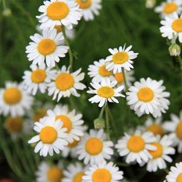

| herbal remedy | sign in register |
|
German Chamomile
UseChamomile is used topically in skin and mucous membrane inflammations and skin diseases. It can be inhaled for respiratory tract inflammations or irritations; used in baths as irrigation for anogenital inflammation; and used internally for GI spasms and inflammatory diseases, and applied topically as an analgesic and spasmolytic. Preliminary data also indicate potential benefit for maintaining remission of ulcerative colitis, improving glycemic and lipid parameters in type 2 diabetes, and improving adaptive and social functioning in children with autism. However, clinical trials supporting any use of chamomile are limited. DosingChamomile has been used as a tea for various conditions and as a topical cream, gel, or oil. Typical oral doses are 1.1 to 15 g/day. Gargles made from 8 g chamomile flowers in 1,000 mL of water have been used in clinical trials. ContraindicationsThe use of chamomile-containing preparations is contraindicated in persons with hypersensitivity to ragweed pollens. Pregnancy/LactationUnreferenced adverse reactions have been cited. Avoid use during pregnancy. No clinical data are available on use during lactation. Side EffectsUse of the tea and essential oil has resulted in anaphylaxis, contact dermatitis, and other severe hypersensitivity reactions. Cross-reactivity to asters, chrysanthemums, ragweed, and other members of the Asteraceae family exists. Toxicology |